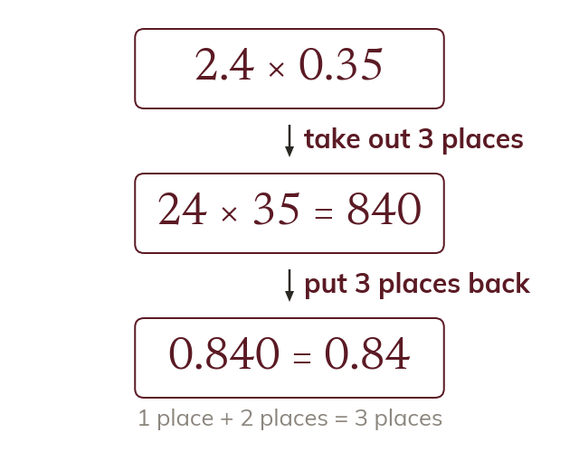

Whole numbers first, the point last
A decimal product is a whole-number product, rescaled. Its decimal places are the two numbers' places together.
A decimal product is a whole-number product with the point put back. The answer has as many decimal places as the two numbers together.